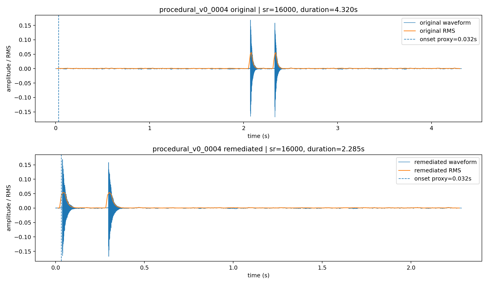
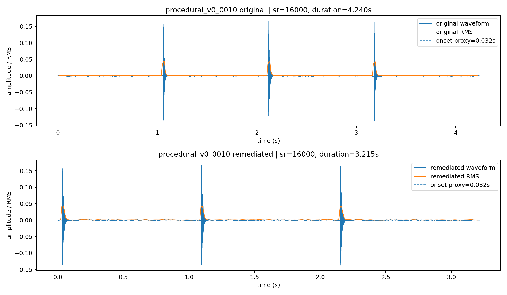

Remediation for procedural_v0_0004 and procedural_v0_0010 is supported by duration-trimming evidence while preserving the local RMS onset proxy.
Review status: REVIEW_READY. Human visual inspection and audition are not yet performed.
Duration trim: 2.035 s | Onset proxy delta: 0.0 s

artifacts/audio_candidates/week12_procedural_baseline_v0/0004_slot_v0_0004_generation_fallback.wav
artifacts/audio_candidates/week15_temporal_alignment_remediated/procedural_v0_0004_trimmed_preroll_20ms.wav
Duration trim: 1.025 s | Onset proxy delta: 0.0 s

artifacts/audio_candidates/week12_procedural_baseline_v0/0010_slot_v0_0010_generation_fallback.wav
artifacts/audio_candidates/week15_temporal_alignment_remediated/procedural_v0_0010_trimmed_preroll_20ms.wav